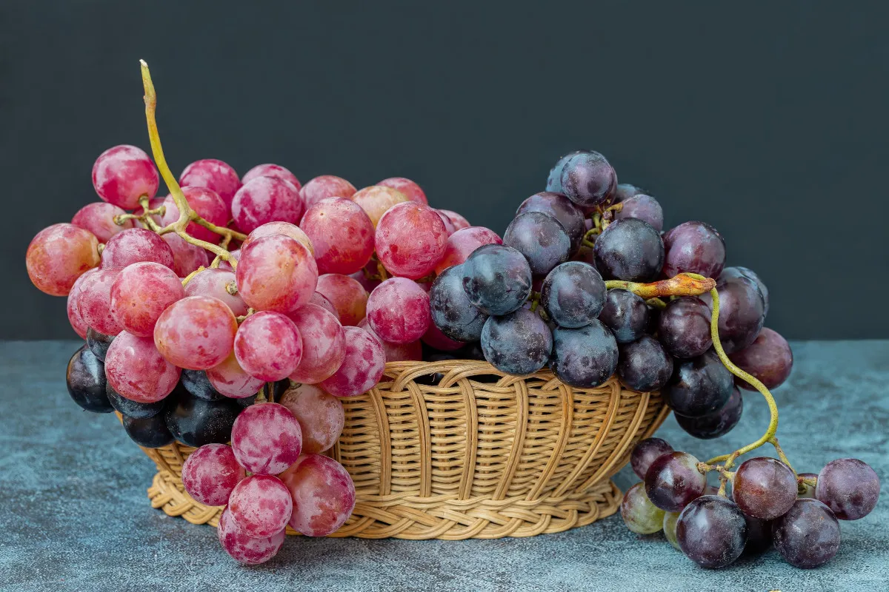
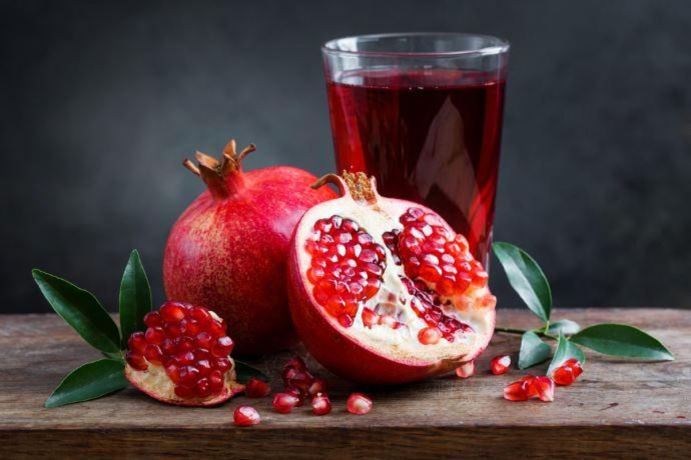
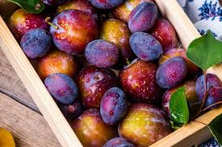

Le nostre offerte autunnali!!!

Acquista 1,31€/Kg
Uva
Si dice che la lista delle proprietà medicamentose ascritte
all'uva sia tanto lunga quante sono le sue varietà: in effetti, proprio per la
peculiare composizione nutrizionale e chimica, l'uva viene sfruttata nel settore
alimentare, fitoterapico e cosmetico.
Prima di sviluppare approfonditamente tutte le proprietà terapeutiche ascritte
all'uva, è doveroso un cenno sui suoi valori nutrizionali, che ci aiuterà
successivamente a comprendere perché l'uva, per certi versi, può essere considerata
un miracolo della natura.
Come abbiamo visto, esistono numerosissime varietà di uva; anzitutto è bene
distinguere l'uva da tavola e quella da vino. L'uva da tavola presenta acini dalla
buccia sottile e dalla polpa soda: tra queste si ricordano i vitigni Baresana,
Cardinal, Isabella, Moscato d'Adda Regina, Zibibbo, ecc. [tratto da www.agraria.org]
La varietà d'uva impiegata per il vino differisce dalla precedente per la scorza più
spessa e coriacea, e la polpa tenera e succulenta.
L'uva bianca presenta un colore dorato, reso tale dai flavoni presenti (quercitrina
e quercetina). L'uva nera si presenta scura perché nella sua composizione chimica
rientrano antociani ed antocianosidi, tra cui delfinidina, petunidina e malvidina:
questa varietà è probabilmente la meglio conosciuta per le spiccate proprietà
antiossidanti.
Anche la vite rossa mostra grappoli coloratissimi: il rosso dipende, ancora una
volta, dai pigmenti (antocianosidi) presente negli acini d'uva.
| Uva, valori per 100g | |
|---|---|
| Energia | 61kcal |
| Fibre | 1,50g |
| Carboidrati | 15,60g |
| Grassi | 0,10g |
| Proteine | 0,50g |
| Acqua | 80,30g |
Acquista 1,31€/Kg

Acquista 3,80€/kg
Melograno
Melograno è il nome di una pianta arborea della Famiglia
Punicacee, Genere Punica e specie granatum; nel linguaggio comune, melograno viene
usato anche come sinonimo di melagrana, ovvero il frutto da essa prodotto.
Il melograno, piccolo albero od arbusto appartenente alla famiglia delle Punicacee,
è conosciuto in botanica con la nomenclatura binomiale Punica Granatum. Nativo
dell'Iran, del Nord Africa e dell'Asia occidentale, è ormai da millenni presente
anche nel Caucaso; in seguito venne importato in Europa, poi in America e in
Australia.
Attualmente, la coltivazione di melograno è largamente estesa in Messico, negli USA,
in Arizona ed in California. In Italia, viene coltivato anche e soprattutto a fini
ornamentali, come testimonia la diffusione delle varietà nane o da fiore.
| Melograno, valori per 100g | |
|---|---|
| Energia | 83kcal |
| Fibre | 4,0g |
| Carboidrati | 18,7g |
| Grassi | 1,17g |
| Proteine | 1,67g |
| Acqua | 77,93g |
Acquista 3,80€/kg

Acquista 2,99€/kg
Prugne
Le prugne sono i frutti del Prunus domestica, un albero
appartenente alla famiglia delle Rosaceae, coltivato un po' in tutta Europa e negli
Stati Uniti, soprattutto in California.
PrugneIn commercio, le prugne si trovano allo stato sia fresco che disidratato
(famose sono le prugne secche californiane); in quest'ultimo caso la concentrazione
dei vari nutrienti risulta nettamente superiore, mentre l'acqua, ovviamente,
diminuisce in maniera significativa.
Esagerare con il consumo di prugne può causare effetti indesiderati come diarrea,
meteorismo e flatulenza, per via della fermentazione zuccherina a livello
intestinale; le prugne andrebbero inoltre assunte con moderazione in presenza di
colite e stipsi spastica, perché la loro azione pro-fermentativa e blandamente
irritante potrebbe accentuare spasmi e gonfiori eccessivi.
| Prugne, valori per 100g | |
|---|---|
| Energia | 46 kcal |
| Fibre | 1,4g |
| Carboidrati | 11,42g |
| Grassi | 0,28g |
| Proteine | 0,7g |
| Acqua | 87 g |
Acquista 2,99€/kg